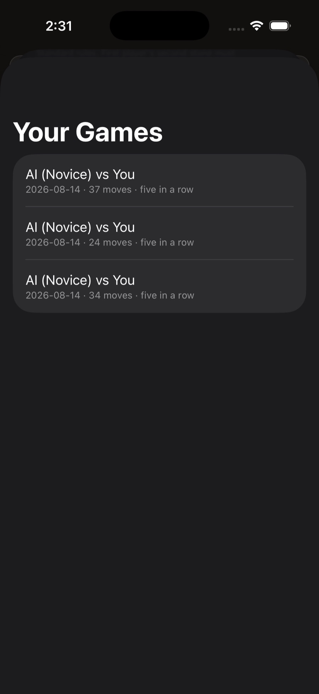
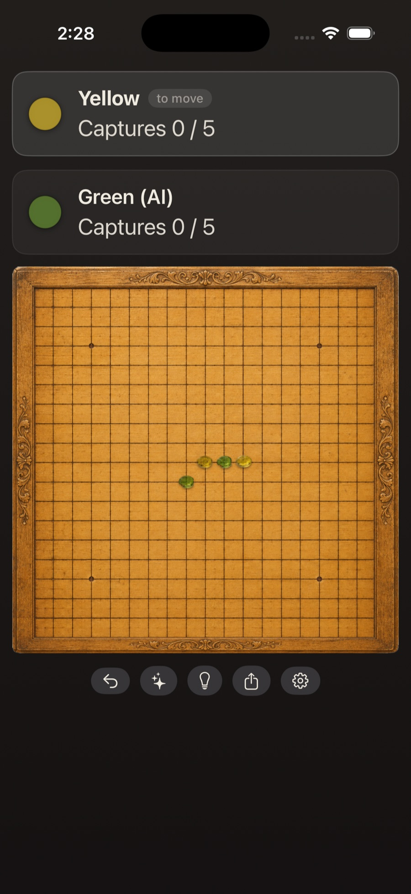
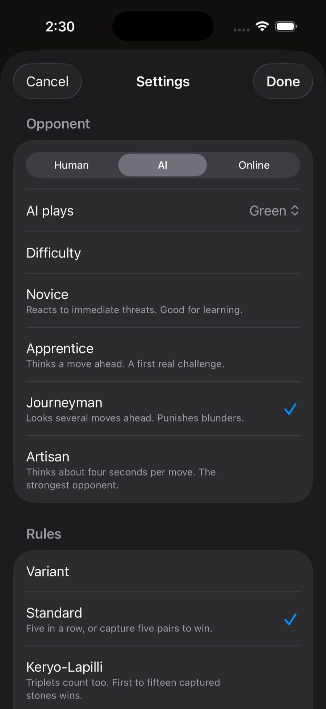
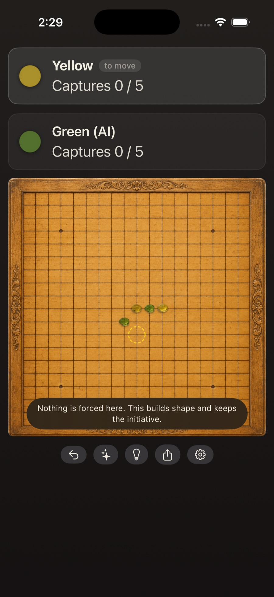
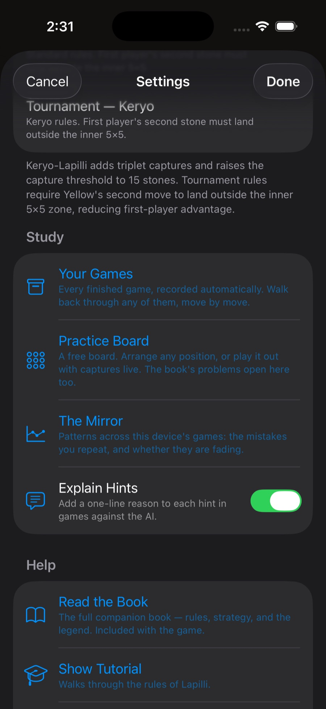
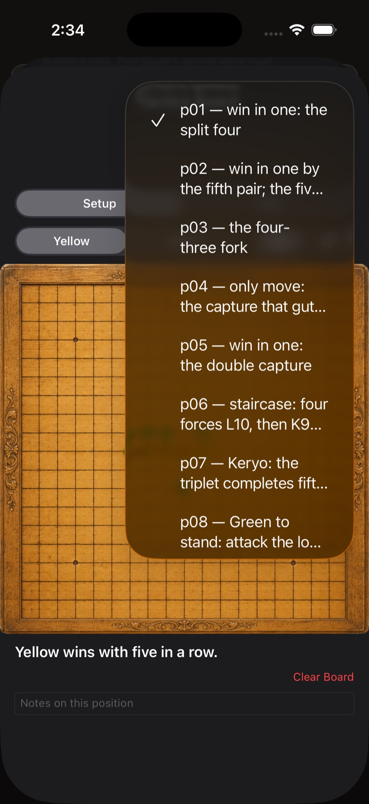

Every screen, and what it does
The game teaches its own rules — the in-app tutorial walks through all of them with stones moving on a demo board, and the companion book under Help goes as deep as anyone could want. This page is the reference for everything else: the buttons, the settings, and the study tools, with pictures. It reads top to bottom, but every section stands alone.

Each player has a card showing their captures out of the five pairs that win, and a small badge marks whose turn it is. Tap any intersection to place a stone. The row of buttons under the board (beside it, on a bigger screen):

Settings opens on the Opponent section: pass-and-play with a Human beside you, the AI, or an Online match through Game Center. Against the AI you choose which color it plays and which rung of the workshop ladder you face — Novice, Apprentice, Journeyman, or Artisan, each described in a line under its name. The Opponents page tells you who they are.
Below that, the rules: Standard, Keryo-Lapilli (triplet captures count too, first to fifteen stones), and the Tournament variants that restrict the first player's second stone. Changing opponent or rules mid-game asks before it discards the board.

The Hint button always rings a square. Turn on Explain Hints — in the Study section of Settings — and each hint also says why, in one line of the language the companion book teaches: this wins outright, this blocks a loss, this answers an open three, this threatens a capture, or nothing is forced and this builds shape. It's off by default; the ring alone is there for players who just want a nudge.

Every game you finish is recorded on your device, automatically, from the day you installed the game. The Study section's Your Games is where they live: every finished game, newest first, with its date, length, and how it ended.

Open one and walk through it with the slider or the arrows. Under the board, every move carries a one-line reading: what it did, what it answered — and, honestly, where a threat demanded an answer that never came. Ask the Artisan and the strongest opponent thinks about the position for a few seconds and tells you what it would have played. Nothing is computed until you ask.


A free board with two bowls beside it, in the Study section. It has two modes, and the difference is the whole idea:
The eraser removes any single stone. The note field keeps whatever you learned, and the whole board — position, note, and all — is exactly where you left it next time. The book menu in the corner opens any of the companion book's fifteen problems on the board; find a problem's published answer in Play mode and it's remembered with a checkmark. And Ask the Artisan works here too — on the Practice Board, the explanation always shows, because practice is where the vocabulary is learned.

The Mirror reads back through every finished game against the AI on your device and charts the mistakes you repeat, as a rate per hundred of your own moves, oldest game to newest — so you can see whether they're fading as you improve. It counts exactly three things, and all of them are facts the record proves, never an engine's opinion:
A threat you ignored that the opponent never punished is deliberately not counted. And every flagged move opens in the walk-back at that exact position, ring on the move, so you can judge the claim on the board yourself. The analysis runs entirely on your device and is cached, so the Mirror opens instantly after the first look.
Nineteen lines each way is a lot of board for a hand's width of glass. On iPhone and iPad, pinch to zoom into the part of the board where the fight is happening — stones become comfortably tappable — then drag with one finger to follow the action. Placing stones works the same while zoomed, and the fit button in the corner returns the whole board in one tap. Most players zoom in early and stay there. The Practice Board zooms the same way.
On your device. Recorded games, practice positions, and the Mirror's analysis are files on your own machine, read by your own machine. Win/loss tallies sync between your devices through your own iCloud account; we run no servers and never see any of it. The full policy is one page: Privacy.